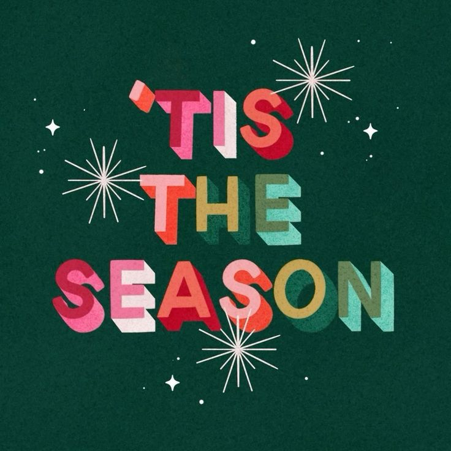
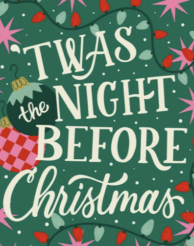
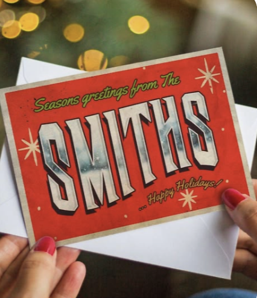
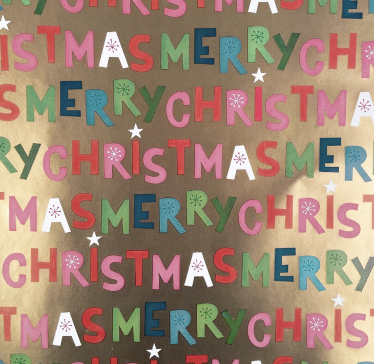

01. Christmas Posters
Posters use large holiday lettering to grab attention and communicate a festive message.
PROJECT TWO · TYPOGRAPHY
Exploring how oversized letters, playful fonts, and holiday colors can make Christmas designs stand out.

THE BACKGROUND
Typography is an important part of graphic design. It is the way letters and words are arranged to communicate a message. Oversized typography uses large lettering to catch attention and make certain words stand out.
Christmas designs often use this style with words like Merry, Joy, and Christmas. Designers combine large decorative fonts with smaller text, holiday colors, and simple decorations to create a festive look.
DESIGN INSPIRATION

Posters use large holiday lettering to grab attention and communicate a festive message.

Greeting cards use decorative lettering to make holiday messages feel personal and fun.

Product packaging uses bold typography to make holiday products stand out.
MY DESIGN
For my design, I used the Mountains of Christmas font. I chose red, green, and cream to create a traditional Christmas feeling. I experimented with different font sizes to make the words stand out.
HAVE YOURSELF A
AND A HAPPY NEW YEAR
FINAL THOUGHTS
Oversized typography works well when designers want to grab attention and make a message easy to notice. It is especially useful for Christmas posters, greeting cards, advertisements, and holiday packaging.
However, using too many large fonts or decorative letters can make a design confusing. Smaller text can also become difficult to read. Designers should balance large lettering with simple text to keep their designs organized.